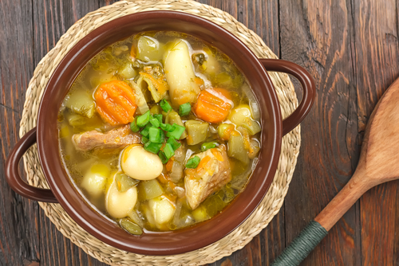
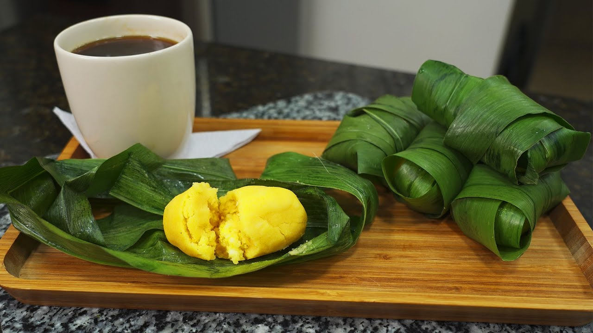
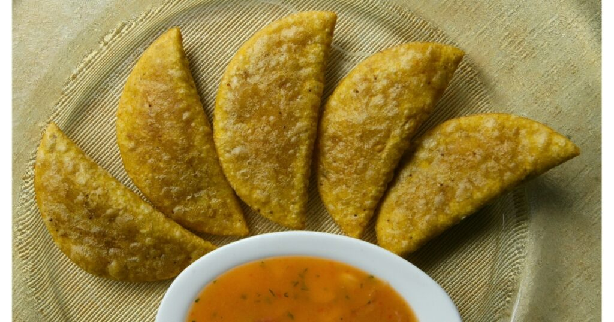

1. Descripción e historia del cantón
Quinsaloma es un cantón de la provincia de Los Ríos, ubicado en la región Costa del Ecuador. Es conocido por sus actividades agrícolas, sus paisajes naturales y la producción de diferentes productos del campo.
Su nombre tiene un significado especial: proviene de las palabras quechuas "Quinsa" o "Kimsa", que significa tres, y "loma", que hace referencia a una elevación del terreno. Por eso también se lo conoce como la ciudad de las tres lomas.
Antes de convertirse en cantón, Quinsaloma pertenecía a Ventanas como parroquia rural desde el 15 de noviembre de 1979. Finalmente, fue creado como cantón el 20 de noviembre de 2007, mediante su publicación en el Registro Oficial número 215.
2. Organización territorial
La cabecera cantonal es la ciudad de Quinsaloma. El territorio también comprende sectores y recintos rurales donde se desarrollan actividades agrícolas y ganaderas.
Entre los sectores y lugares del cantón se encuentran:
- Los Cerritos.
- La Lorena.
- El Guabito.
- Las Palmitas.
- Sector Balsería.
- Magdalena de Chipe.
- Pambilar de Calope.
- Pambilar de Minuape.
Estos lugares son sectores y recintos, no una lista de parroquias independientes.
3. Actividades económicas y gastronomía
La agricultura es una de las principales actividades económicas de Quinsaloma. Sus habitantes cultivan y comercializan productos que contribuyen al desarrollo económico del cantón.
Principales productos agrícolas
- Naranja.
- Mandarina.
- Toronja.
- Maracuyá.
- Cacao.
- Maíz.
- Arroz.
- Soya.
- Banano.
- Café.
Gastronomía
La gastronomía de Quinsaloma conserva las tradiciones culinarias de la región Costa. Entre los platos que se pueden encontrar están:
- Caldo de gallina criolla.
- Chigüiles y Chicha de jora.
- Bolón de verde.
- Empanadas de verde.
- Hayacas.
- Fritada y Hornado de chancho.



4. Lugares turísticos
Los Cerritos
Es uno de los lugares de interés turístico del cantón, reconocido por formar parte de sus sectores naturales y recreativos.
La Lorena
Es un sector de Quinsaloma mencionado entre los lugares de interés del territorio.
El Guabito
Es uno de los sitios locales que forman parte de los atractivos mencionados por el Municipio.
Complejo Turístico Quinsaloma
Es un espacio de entretenimiento y recreación para los habitantes y visitantes del cantón.
Puente Haón
Es otro de los lugares reconocidos dentro de los sitios de interés de Quinsaloma.
Pambilar de Calope y Pambilar de Minuape
Son sectores que forman parte de los atractivos naturales mencionados en la información turística del cantón.
Ríos del sector
Los ríos y espacios naturales de Quinsaloma ofrecen paisajes propios de la región Costa y forman parte de su riqueza natural.
5. Hoteles y hospedaje
Los visitantes pueden consultar los establecimientos de hospedaje disponibles en la ciudad y sus alrededores.
Consultar hoteles en Quinsaloma6. Alcalde del cantón
Cristhian Aldaz González
Para conocer el nombre del alcalde y las autoridades municipales vigentes, se puede consultar la página oficial del Gobierno Autónomo Descentralizado Municipal de Quinsaloma.
Visitar el Municipio de Quinsaloma7. Población
Según el Censo de Población y Vivienda 2022 del Instituto Nacional de Estadística y Censos (INEC), el cantón Quinsaloma tiene una población de 19.470 habitantes.
Sus habitantes se dedican principalmente a la agricultura, la ganadería y el comercio. La producción de frutas y otros cultivos es importante para la economía local.
8. Ubicación geográfica
Quinsaloma se encuentra en la parte centro-oriental de la provincia de Los Ríos. Limita con territorios de las provincias de Cotopaxi y Bolívar, además de otros cantones de Los Ríos.